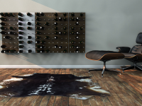

![[TOP 10] Canadian most successful KickStarter projects (Part 1)](wp-content/uploads/2012/09/chivalry_logos.png)
Kickstarter is a US-based platform that requires project makers to have a US bank account.
But it happens, more and more often, that non-US project leaders use a proxi and go fundraise on KickStarter.
Here is a TOP 10 of Canadian based project, up to September 2012 (it’s important because new records are recorded every month!)
From the tenth place to the 6th place, here is the first part of that TOP 10.
#10 CHIVALRY
Pledged : $ 85,934 (Initial Goal :$50,000)
Category : Video Game
Location : Toronto
Funding Date : September 2012
At tenth rank we can find a Video Game.
CHIVALRY is a FPS warfare video game that takes place in the medieval age. The whole gameplay is then focused on battle with swords, axes or bows in castle or battleground environment.
According to Torn Banner Studio’s team, initiator of this project, the game was already almost finished when they launch the Kickstarter campaign in August 2012. They actually decided to go and rise on the platform at the final stage of their project for several reasons:
- Raise money to pay team member’s debt and loans accumulated over the past 2 years.
– Get direct pre-order (and by-pass online distributor)
– Benefit from a high exposure and build a engaged community around the concept before the official launch in Fall 2012.

#9 LEAST I COULD DO
Pledged : $ 105,142 (Initial Goal : $75 ,000)
Category : Animation
Location : Montreal
Funding Date : July 2011
LEAST I COULD DO is originally a comic issued on the web since 2003. After having build a consequent community of readers and won several awards, Ryan Sohmer & Lar Desouza, Montreal based duo, decided to adapt their stories to the small screen.
Things went well when they had discussions with a national cartoon broadcaster for producing this venture. The problem was that they had to change the essence of their original work to fit with requirement. Then they refused. Eventually that broadcaster which had refused their cartoon released shortly after a new series using some of their art and ideas.
For this duo launching Kickstarter was a manner to by-pass classic producers in order to raise money, create a pilot and go to sell it directly to TV broadcasters. And it worked well since they overcame the initial goal by 140%.
 #8 TFK
#8 TFK
Pledged : $ 105,294 (Initial Goal : $40 ,000)
Category : Music
Location : Toronto
Funding Date : December 2011
TFK (Thousand Foot Krutch), an Ontarian rock band, illustrates how the music industry can be rocked by new technologies and new financing methods.
Those 3 guys used the commitment of their audience to go independent and release their new album without any help from their former label. As they say “this [Kickstarter campaign] will give us new ways to share our musical experience in a closer way than ever before”.
Actually the money would be used for distributing their finished album. Rewards offered by the group ranged from physical & digital album to backstage passes for their upcoming shows.
A real success!
> Read now the Second Part of this TOP 10!

#7 STACT
Pledged : $ 108,045 (Initial Goal : $20 ,000)
Category : Product Design
Location : Vancouver
Funding Date : September 2012
Product Design projects are among the most successful on Kickstarter.
Jamie Kasza launched his campaign with a goal of $20,000. He achieved that goal within a day as consumers were impressed by his modular wine wall system.
Founded in Vancouver, STACT is an affordable, customizable, and surprisingly fashionable solution to traditional wine storage.
This time too the platform was used to realise pre-order. The success comes because with such a modular product people can pledge for 1, 2, 3, 4 panel or an entire wall.
The campaign was also really interactive since they inserted a poll within their Kickstarter page !

{kind=link}
#6 MERCENARY KINGS
Pledged : $ 116,064 (Initial Goal : $75 ,000)
Category : Video Games
Location : Montreal
Funding Date : Septembre 2012
This is the second video game in this ranking. On the contrary to CHIVALRY, this game is a 2D old-fashion one.
Behind the graphics the game is however really contemporary with infinitely customizable weapons and multiplayer collaboration aspect.
Developped by the Montreal-located Tribute Studio the game was successfully funded this month on the crowdfunding platform and has began the 6th most successful Canadian project on Kickstarter.
With a total of 3880 backers (average pledge of 30$ per backer), this case illustrates how the video game industry can rely on a large community of supporters.
Pingback: [Interview] STACT: how to raise money and awareness via crowdfunding? | SeedingFactory()
Pingback: [TOP 10] Canadian most successful KickStarter projects (Part 2) | SeedingFactory()
Pingback: [STACT] How to Raise Money and Awareness via Crowdfunding? | The Crowdfund Factory()
Pingback: [Tribute Games] How to reach 154% of its goal on KickStarter? | The Crowdfund Factory()
Pingback: [TOP 10] Canadian most successful KickStarter projects (Part 2) | The Crowdfund Factory()